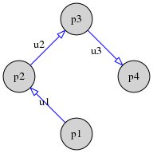
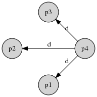
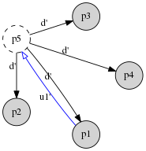

5.2.1. Group Key Agreement (GKA)¶
The group key agreement is conducted according to CLIQUES [00CLIQ]. We modify the protocol to use ECDH based on x25519 instead of classic DH, since it is superior in all attributes – faster to process, smaller keys to transport and store, and existing libraries are simpler to interface with. It negotiates a shared group key for \(n\) members in a total of \(O(n)\) messages sent, and re-negotiates (single-member) include, exclude or key refresh in \(O(1)\) messages, assuming broadcasts are available.
The CLIQUES key agreement algorithm is based on the Group-Diffie-Hellman (GDH) concept, in which each participant generates a private contributory key portion for the session. This will be computed into the (public) intermediate keys passed between the members. At the end of the process, a set of \(n\) intermediate keys will be available to all, with each of them lacking the private contribution of exactly one participant. Each participant uses that one respective intermediate key missing their own contribution to compute the same shared group key.
Based on this GDH concept two related protocols are constructed: The initial key agreement (IKA) and the auxiliary key agreement (AKA). IKA is used for an initial key agreement with no initial knowledge of intermediate keys of the other parties. AKA is a supplementary and simplified protocol to agree on an new, changed group key once the IKA protocol has successfully terminated. It is executed on including or excluding participants as well as refreshing the shared group key.
Besides their slightly different actions within the group key agreement (e.g. initiator of upflow or of downflow, see below), no participant of the IKA or AKA bear a special role. All participants of the CLIQUES key agreement can be considered equal in terms of the protocol functionality.
CLIQUES does not protect against active attackers. However, in our use of it, all messages are co-located with our Authenticated Signature Key Exchange (ASKE) messages, which authenticates each full message in the whole protocol. Therefore, an active attack is countered by the final ASKE verification step.
5.2.1.1. Initial Key Agreement (IKA)¶
The initial key agreement follows the outline of the [00CLIQ] IKA.1 protocol. The protocol contains two phases: The upflow phase and the downflow phase. In the upflow, each participant generates their private key contribution, and mixes it into the elements of the (growing) chain of intermediate keys. Once everyone has participated in the upflow, the last participant will initiate the downflow by broadcasting the final chain of intermediate keys to all, enabling them to individually compute the group key.
5.2.1.1.1. Upflow¶
The first participant assembles an ordered list of all participants included in the IKA, with themselves as the first element. Then, it generates its private Diffie-Hellman key \(x_1\) and computes the corresponding public key using DH exponentation. In the case of mpENC, this is x25519 scalar multiplication with the base point \(G\), i.e. \(x_1G\). Then it generates a list of intermediate keys to pass onto the next particiant in the list. The initial portion of the list (excluding the final element) are intermediate keys lacking its own contribution; for the first participant, this is simply \((G)\). The last – or cardinal – element is an intermediate key that contains all previous participants’ contributions; for the first participant, this is \((x_1G)\).
Successive participants receiving the upflow messages similarly generate their own private contributions. This contribution is used for computing new intermediate keys using DH exponentation. The previous cardinal generates two items in the new list – itself unaltered, inserted just before the new cardinal key, and also the new cardinal key, which is the previous cardinal key multiplied with their own contribution.
Example:
The following figure shows the sequence of upflow messages (\(u_i\)) sent among four participants (\(p_i\)).

- \(u1\) contains:
- Participants: \((p1,\; p2,\; p3,\; p4)\)
- Calculate intermediate keys: \((1,\; x_1) . G\)
- Intermediate keys: \((G,\; x_1G)\)
- \(u2\) contains:
- Participants: \((p1,\; p2,\; p3,\; p4)\)
- Calculate intermediate keys: \(x_2 . \mathsf{init}_1;\; (1,\; x_2) . \mathsf{ckey}_1\)
- Intermediate keys: \((x_2G,\; x_1G,\; x_2x_1G)\)
- \(u3\) contains:
- Participants: \((p1,\; p2,\; p3,\; p4)\)
- Calculate intermediate keys: \(x_3 . \mathsf{init}_2;\; (1,\; x_3) . \mathsf{ckey}_2\)
- Intermediate keys: \((x_3x_2G,\; x_3x_1G,\; x_2x_1G,\; x_3x_2x_1G)\)
Where \(A;\; B\) denotes vector concatenation, and \(\mathsf{init}_i\) and \(\mathsf{ckey}_i\) denote respectively the initial portion and cardinal key (final element) of the intermediate keys contained in \(u_i\).
5.2.1.1.2. Downflow¶
The last participant in the chain performs the same operations by adding their own contributions to the intermediate keys. However, the cardinal key at this stage is complete, containing contributions from everyone. Therefore, the last participant retains the new cardinal key as the shared group secret, and broadcasts the list of other intermediate keys to all other members. After that, the participant has finished their participation in the IKA protocol and possesses the shared group secret, then computes the group key from it.
Each recipient of the downflow message will now be able to take “their” intermediate key out of the list (i.e. the one missing their own contribution). For the \(i\)-th member in the chain, this is the \(i\)-th intermediate key. Through DH exponentiation of their own private key contribution with “their” intermediate key, they will all derive the same shared secret. This is the point this participant has also completed its part in the IKA and has transitioned into the ready state.
Example:
The following figure shows the corresponding downflow message (\(d\)) broadcast to all other participants (\(p_i\)).

- \(d\) contains:
- Participants: \((p1,\; p2,\; p3,\; p4)\)
- Intermediate keys: \((x_4x_3x_2G,\; x_4x_3x_1G,\; x_4x_2x_1G,\; x_3x_2x_1G)\)
After receiving these intermediate keys, every participant can compute the same shared group secret by multiplying “their” intermediate key with their own private contribution:
This group secret is used as input into a KDF to derive further keys to be used for other operations, such as message encryption to the group.
5.2.1.2. Auxiliary Key Agreement (AKA)¶
Once an initialised chat encryption is available for an established group of participants, an auxiliary key agreement (AKA) can be invoked. These runs are necessary for changes in group participants (including new members or excluding existing ones) to update the group secret. Therefore allowing the previous participant set only to read messages before the AKA, and the new participant set to read/write messages after the AKA. Furthermore the AKA can also be used to refresh the group secret, for more fine-grained forward secrecy, by updating a participant’s private key contribution.
5.2.1.2.1. Member Inclusion¶
Member inclusion is performed very similarly to the IKA protocol. An existing participant may initiate an upflow for this. First the new participant(s) are appended to the list of existing participants. To avoid the new participants gaining knowledge of the previous group secret, the initiator of the include is required to update its private key contribution in the following fashion:
- Perform a DH exponentiation with its own private contribution on its “own” intermediate key (as if it was generating the old group secret), then append it to the list of intermediate keys for each new member. Note that this is a secret value and must not be sent yet! The next steps hide it.
- Generate a new private key contribution (see Updating Private Key Contributions).
- Perform DH exponentiations on all intermediate keys, except its “own”, with the new private key contribution.
The upflow is now initiated by sending this list of updated intermediate keys to the (first of the) new participant(s) to include. The new participant(s) perform the key agreement protocol in exactly the same fashion as done in the IKA upflow by generating their own private key contributions, performing DH computations with them on the intermediate keys and extending the intermediate key list with their “own” intermediate key.
The last (new) participant in the extended list now will initiate the downflow broadcast message consisting of all intermediate keys, thus enabling every participant to compute the new shared group secret and reach a ready state.
Using the AKA for includes it is possible to add new participants either one by one or multiple at the same time. It is more efficient to add multiple new participants at the same time than to add them sequentially.
Example:
The following figure shows inclusion of a participant (\(p5\)) – initiated by \(p1\) – to the existing group of four participants.

- \(u1'\) contains:
- Participants: \((p1,\; p2,\; p3,\; p4,\; p5)\)
- Intermediate keys: \((x_4x_3x_2G,\; x_1'x_4x_3x_1G,\; x_1'x_4x_2x_1G,\; x_1'x_3x_2x_1G,\; x_1'x_1x_4x_3x_2G)\)
- \(d'\) contains:
- Participants: \((p1,\; p2,\; p3,\; p4,\; p5)\)
- Intermediate keys: \((x_5x_4x_3x_2G,\; x_5x_1'x_4x_3x_1G,\; x_5x_1'x_4x_2x_1G,\; x_5x_1'x_3x_2x_1G,\; x_1'x_1x_4x_3x_2G)\)
Where \(x_1\) is the initiator’s old private key contribution, \(x_1'\) is the new contribution.
Again, after receiving these intermediate keys, every participant can compute the same shared group secret by multiplying “their” intermediate key with their own private contribution(s):
5.2.1.2.2. Member Exclusion¶
The AKA protocol flow for member exclusion is similar to – but simpler – than member inclusion. The initiator updates their private key contribution (see Updating Private Key Contributions) in the same manner as for includes above. Then the participant(s) as well as their intermediate key(s) are removed from the respective lists for the participant(s) to be excluded. Now the downflow broadcast message can be sent directly without the need of a preceding upflow phase. Thus, all remaining participants can compute the new shared group secret and reach a ready state.
When using the AKA for exclusion it is possible to remove participants either one by one or multiple at the same time. It is more efficient to remove multiple participants at the same time than to remove them sequentially.
5.2.1.2.3. Key Refresh¶
To help more granular forward secrecy over extended periods of key use, it is a good idea to refresh the group secret at suitable intervals (e.g. depending on time, number of messages or volume encrypted with it). A key refresh is very simple, and can be initiated by any participant. The initiating participant renews their own private key contribution (see Updating Private Key Contributions), and broadcasts a downflow message with all updated intermediate keys to all participants without the need of a preceding upflow. Thus, all participants can compute the new shared group key and reach a ready state.
It is wise for participants to track the “age” of their own private key contribution. This mechanism can be used for achieving a “rolling” group secret refresh by always updating the oldest private key contributions of participants.
5.2.1.3. Member Departure¶
Member departure is the voluntary parting of a participant rather than an exclusion initiated by another participant. In effect it is the same, with the only difference that the departing member indicates the desire to leave, and a member exclusion AKA will be initiated upon that by another participant.
In mpENC, this is not a direct concern of the GKA, and works the same way independently of the particular GKA we choose. That is, the “desire to leave” is a special data message, sent via the normal mechanism for data messages.
5.2.1.4. Updating Private Key Contributions¶
When the private key contribution (for an inclusion, exclusion or refresh) is updated, the client must keep all the key contributions in a list, including old contributions. When performing computations to derive a new cardinal key, this whole list of one’s own private key contributions needs to be used.
In theory, these individual contributions can be condensed into a single value, via multiplication modulo the order of the base element (base point in ECC). However, in x25519 only certain values are valid secret keys; secret inputs not in the expected format are coerced [1] into this format, which effectively changes the value used for the actual mathematical scalar multiplication. If we combine secret keys using modular multiplication, this will sometimes result in a value that is effectively corrupted by typical x25519 APIs. So, we cannot do this in practise; we must store all our contributions separately, to be mixed individually into our intermediate key later.
This sequence may grow big over time, so that the overhead of applying a long sequence of elliptic curve scalar multiplications can become more significant. In such cases, it may be worth to re-key the whole session. We have not yet implemented this, but will do so if it becomes a problem in practice.
Additionally, we cannot pre-emptively combine old contributions into the intermediate key, e.g. to add an extra step in our key-update sequence described in Member Inclusion:
- Perform DH exponentiations on its “own” intermediate key, with the old private key contribution (as from step #1).
This would cause us to reveal the group secret of the previous session, namely \(x_1x_5x_4x_3x_2G\) in the example of the above section, which of course would be a catastrophic security failure.
| [1] | For example, in libsodium and jodid25519. |